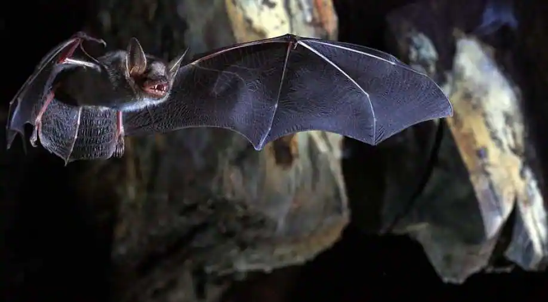

|  |
Bats are mammals of the order Chiroptera.[a] With their forelimbs adapted as wings, they are the only mammals capable of true and sustained flight. Bats are more maneuverable than most birds, flying with their very long spread-out digits covered with a thin membrane or patagium. The smallest bat, and arguably the smallest extant mammal, is Kitti's hog-nosed bat, which is 29–34 millimetres (1+1⁄8–1+3⁄8 inches) in length, 150 mm (6 in) across the wings and 2–2.6 g (1⁄16–3⁄32 oz) in mass. The largest bats are the flying foxes, with the giant golden-crowned flying fox, Acerodon jubatus, reaching a weight of 1.6 kg (3+1⁄2 lb) and having a wingspan of 1.7 m (5 ft 7 in).
The second largest order of mammals after rodents, bats comprise about 20% of all classified mammal species worldwide, with over 1,400 species. These were traditionally divided into two suborders: the largely fruit-eating megabats, and the echolocating microbats. But more recent evidence has supported dividing the order into Yinpterochiroptera and Yangochiroptera, with megabats as members of the former along with several species of microbats. |